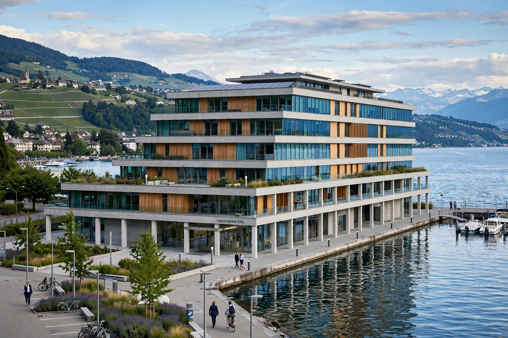

| Industry | Food processing |
|---|---|
| Founded | 1866 (Anglo-Swiss Condensed Milk Co.); 1867 (Farine Lactée Henri Nestlé) |
| Founder | Henri Nestlé |
| Headquarters | Vevey, Vaud, Switzerland |
| Revenue | ~CHF 93 billion (2023) |
| Employees | ~268,000 (2023) |
Nestlé S.A. is a Swiss multinational food and drink processing conglomerate headquartered in Vevey, Switzerland. It has been the largest publicly held food company in the world for much of the twenty-first century, measured by revenue and other metrics. Nestlé's products include coffee and tea, infant food, bottled water, breakfast cereals, chocolate and confectionery, dairy products, ice cream, frozen food and pet foods.
The company originates in two ventures of the 1860s: the Anglo-Swiss Condensed Milk Company (1866) and Henri Nestlé's "farine lactée" (1867), an infant cereal combining cow's milk, wheat flour and sugar that saved the life of a premature infant and became a commercial success. The two merged in 1905 to form the Nestlé and Anglo-Swiss Condensed Milk Company. During the world wars the company expanded abroad; after 1947 it absorbed the Maggi seasoning business and grew by acquisitions including Findus, Libby's, Carnation, Rowntree, Gerber and the pet-food maker Ralston Purina. Its coffee brand Nescafé, launched in 1938, and the Nespresso system (1986) became global successes.
Major brands include Kit Kat, Nescafé, Nespresso, Maggi, Milo, Purina, Perrier and San Pellegrino. The company markets more than 2,000 brands in 186 countries and operates several hundred factories worldwide. It also holds a large stake in the cosmetics group L'Oréal.
Nestlé has faced long-running campaigns over the marketing of infant formula in developing countries, which prompted an international boycott beginning in 1977 and the adoption of the WHO International Code of Marketing of Breast-milk Substitutes in 1981. It has also been criticised over water extraction, cocoa supply-chain child labour, and plastic packaging. The company has responded with public commitments on nutrition, responsible sourcing and carbon neutrality.